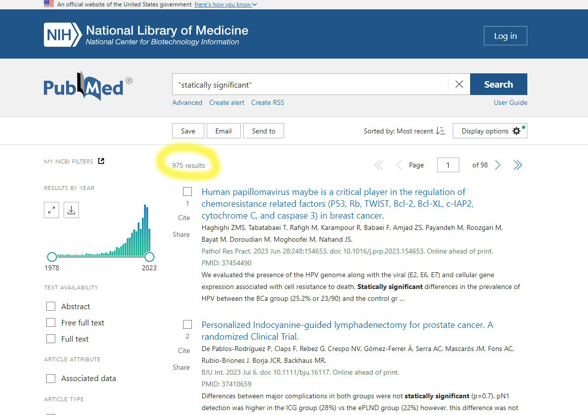

not_run = function(){ # takes too long
library(rentrez)
library(ggplot2)
library(dplyr)
ids = entrez_search(db='pubmed', term='"statically significant"', retmax=1000)
all_records = NULL
N = ids$count
for (k in 242:N){ # to avoid 414 error with requesting too many records
record = entrez_fetch(db="pubmed", id = ids$ids[k], rettype="xml") # get from pubmed
parsed = parse_pubmed_xml(record)
if(length(parsed)==0){next} # for empty records like books
# make data frame, year is sometimes empty
year = ifelse(length(parsed$year)==0, NA, parsed$year)
#
frame = data.frame(pmid = parsed$pmid, # make into a data frame
year = year, # just year
journal = parsed$journal,
n.authors = length(parsed$authors), # number of authors
title = parsed$title,
abstract = paste(parsed$abstract, collapse=' ')) # paste together paragraphs
all_records = bind_rows(all_records, frame)
Sys.sleep(7)
}
}A colleague sent me a draft manuscript with the typo “statically significant”. A typo that passes a spell check, but would surely not pass reviewers and editors?
Oh dear, a quick search of PubMed reveals that it has snuck past reviewers and editors, many many times. There are 975 abstracts that have used the phrase. We should have a celebration for the 1000th paper!

Surely that’s only in the terrible journals though? Well only if you consider JAMA to be one of the terrible journals (abstract here).
It has also happened in BMJ Open, BMC Surgery, and — of all places — Reading and Writing, which “publishes high-quality scientific articles pertaining to the processes, acquisition, and loss of reading and writing skills” and is also contributing to that loss.
“statically” is a good word, it often gets paired with “charged”. Like statically charged hair from a Van de Graaff Generator.
“statistically” is a good word, it often gets paired with “significant”, to the detriment of both.
So there’s another level of hell when it comes to “statistical significance”, and that’s nearly 1000 people not even able to spell their poorly conceived ideas.